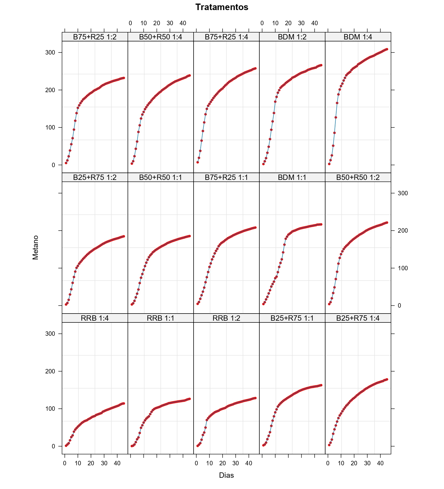

Nos últimos anos houve um grande aumento na produção global de carne bovina, sendo Estados Unidos, Brasil e China os três maiores produtores mundiais, que juntos responderam por aproximadamente 50% da produção mundial. Consequentemente, há o aumento da geração de resíduos, causando um impacto ambiental significativo. No processo de abate de bovinos, o resíduo ruminal bovino (RRB), que compreende o conteúdo estomacal, é gerado após o rúmen e outras partes dos estômagos serem esvaziadas.Trata-se do resíduo de maior geração, composto por ração parcialmente digerida, capim e grãos.
Para cada bovino abatido, são gerados aproximadamente 60 kg de RRB úmido. Outro resíduo que apresenta aumento na geração é o grão residual de cervejaria ou bagaço de malte (BDM) que representa 85% do total de resíduos sólidos gerados nas indústrias cervejeiras. A cada 100 L de cerveja produzida, 20 kg de BDM são gerados. Este trabalho tem por objetivo avaliar condições para a produção de biogás (mLN gSTV-1) e metano (mLN CH4 gSTV-1) a partir de RRB e BDM.
Para esse propósito foi conduzido um experimento com várias combinações de níveis de RRB e BDM e a produção de biogás acumulada foi registrada, diariamente, por um período de quarenta e cinco dias. Modelos não lineares assintóticos com erros normais foram considerados para descrever e comparar as combinações de RRB e BDM com melhores produções.

_page-0001.jpg)